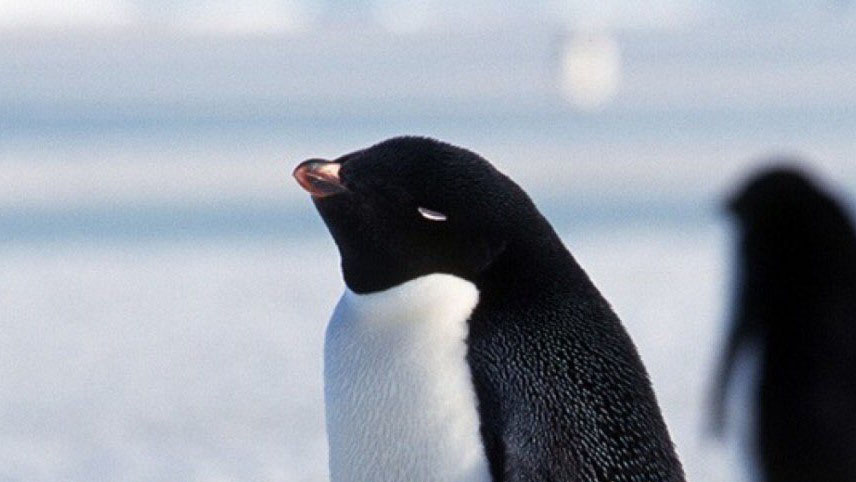
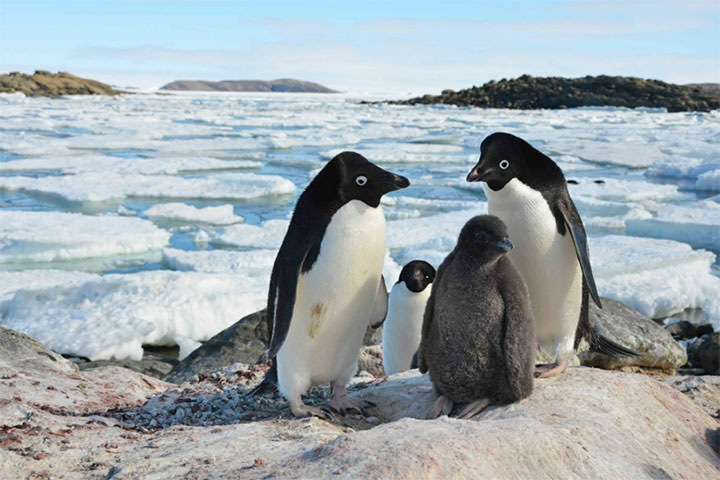
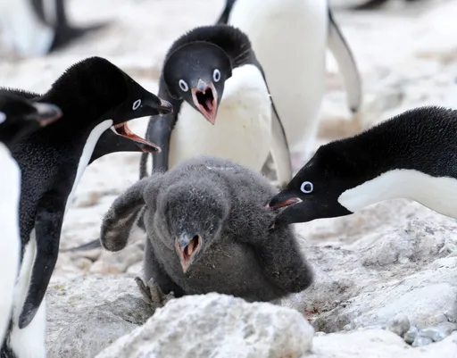
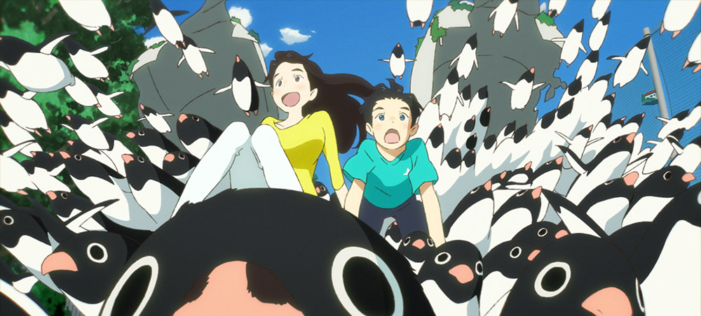
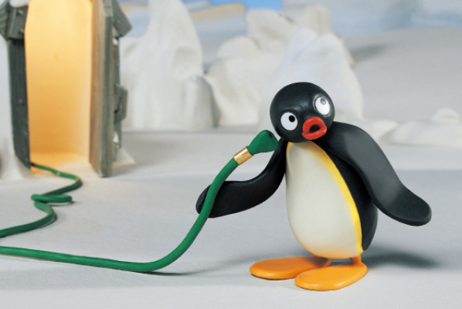
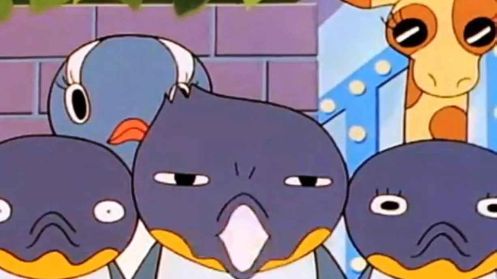

ペンギンの
種類
ペンギンは種類によって性格や姿が大きくかわってきます。ここでは有名なペンギンの種類について、ご紹介いたします。

皇帝ペンギン
ペンギンの中でもっとも大型な皇帝ペンギン。主に南極大陸沿岸部に生息し、、魚類、イカ、オキアミを主食とするそうです。

キング
ペンギン
南大西洋とインド洋に生息し、ハダカイワシ類などの魚類を好むペンギン。皇帝ペンギンよりも以前に発見されもともとは世界一大きなペンギンだと思われていたそうです。

フィヨルド
ペンギン
ニュージーランドに生息し、人間に対して警戒心が極めて高いペンギンです。現在は生息地の破壊などによって個体数は減少しているそうです。

マゼラン
ペンギン
南アメリカ大陸の太平洋岸と大西洋岸、フォークランド諸島に生息しています。群れで泳ぎ小魚を好んで食べるそうです。
アデリーペンギンの生態
長谷川の推しペンギンについて
ペンギンには様々な種類があると先ほどご紹介いたしましたが、今回わたしが紹介したいペンギンはこちら
アデリーペンギン
か、かわいい…
まさに!!悪魔的可愛さッッツ!!
アデリーペンギンは主に南極大陸に集団でコロニーを作り生息しています。 こんなにかわいらしい見た目をしているアデリーペンギンですので南極で穏やかに寝転んだりして生活をしている姿を想像されるかもしれません。 しかしこのペンギン、実はかなり獰猛な性格をしており、グーグルでアデリーペンギンと検索するとまず最初に『アデリーペンギン 突き落とす』なんて表示されたりもします…
ペンギンとキャラクター
ここでは、アデリーペンギンをモチーフにして作られた作品をいくつかかご紹介します。
ペンギンハイウェイ
森見登美彦の小説ですが最近映画としても上映されました。また先ほどご紹介したアデリーペンギンが大量に登場する作品です。
あらすじ
賢く博識な小学生の主人公、アオヤマの住む町である日突然、ペンギンの群れが発生。この不思議な事件に歯科医院のお姉さんの不思議な能力がかかわっていることを知った主人公はその謎の研究をすることにした。 余談ですが、わたしは森見登美彦に影響されて大学は関西に進学をした節があります。 おそらく同年代にはこのように森見登美彦のせいで関西に変なあこがれを抱いてしまった人間が多いのではないでしょうか…
ピングー
まずご紹介するのはペンギン界きっての有名キャラクターピングー
あらすじ
皆さんも一度はご覧になったことがあると思います。スイス発祥のクレイアニメでピングーとその家族を描いている作品です。 見た目からしてアデリーペンギンだと思いご紹介しようとしましたがどうやら皇帝ペンギンをモチーフにしているようです。
バケツでご飯
こちらは少し昔の漫画ですが、私の祖父の家にあり小さいころよく読んでいた作品です。
あらすじ
上野動物園が舞台の作品です。動物園にいる彼らは実はエンターテイナーとして働いており閉演した後は秘密の電車にのり、秘密の町へ帰り、人間とかわらない生活をしている日常を描いた作品です。 関西弁の主人公、いや主鳥公とその母親がつくる筑前煮がおいしそうで印象深い作品です。 見た目のかわいらしさとは裏腹にシュールだったりブラックユーモアのちりばめ方が魅力的です。
個人的な印象ですが、創作物におけるペンギンの取り扱いとして、ただかわいいものとして登場させるだけでなく見た目とは裏腹にある利己的な様子やシュールさなども付随してキャラクターとして構成しているような印象を抱いています。
おそらくそういった両面性がペンギン全般の魅力につながっているのではないでしょうか?
それではご覧いただきありがとうございました。また魅力的なペンギンのキャラクターがぜひ長谷川にも紹介してみてください♪